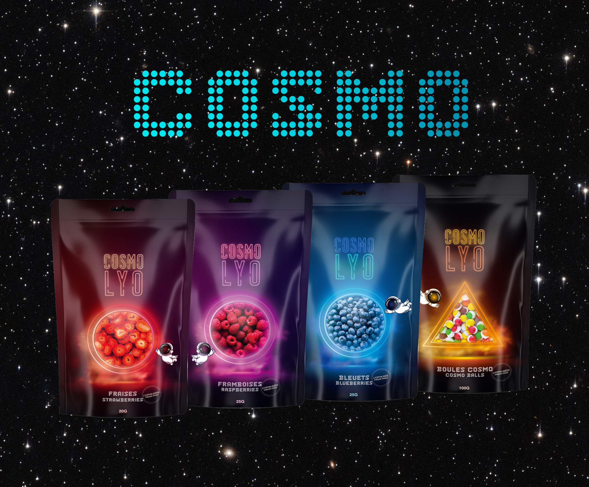

Produits
Nos fruits lyophilisés croquants, nos bonbons interstellaires et nos collations cosmiques
sont faits pour faire voyager vos papilles. Que ce soit pour l'école, le bureau ou le sport,
Cosmo Lyo vous propulse dans l’univers du bon goût… sans gravité !

Carte
À propos
Cosmo Lyo est une entreprise agroalimentaire innovante basée à Saguenay,
spécialisée dans la lyophilisation industrielle. Grâce à une maîtrise
technologique de pointe — domotique, automatisation et procédés scientifiques
rigoureux — nous transformons des fruits en collations croustillantes,
savoureuses et nutritives, sans additifs ni conservateurs.
Notre gamme reconnue Aliments du Québec comprend notamment des fraises,
framboises, bleuets sauvages et les populaires Boules Cosmo. En plus de
notre offre au détail, nous soutenons la vitalité régionale grâce à des
services de sous-traitance et de co-transformation pour les producteurs,
restaurateurs et institutions.
Nous croyons fermement que l’alimentation locale, saine et pratique peut
rimer avec plaisir et durabilité. Cosmo Lyo, c’est une invitation à faire
de l’espace dans ton lunch — tout en valorisant le terroir boréal.
Contact
Cosmo Lyo est un transformateur et distributeur. Notre mission est de nous assurer que les points de vente sont desservis en priorité. Si vous cherchez nos produits, consultez la section "Carte" et identifiez un détaillant près de chez vous.
üì¶ Commandes HRI : cosmolyo.square.site
✉️ Écrivez-nous : info@cosmolyo.ca